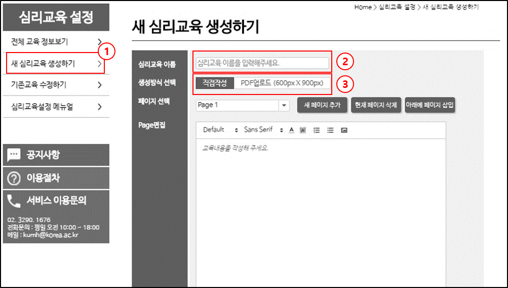
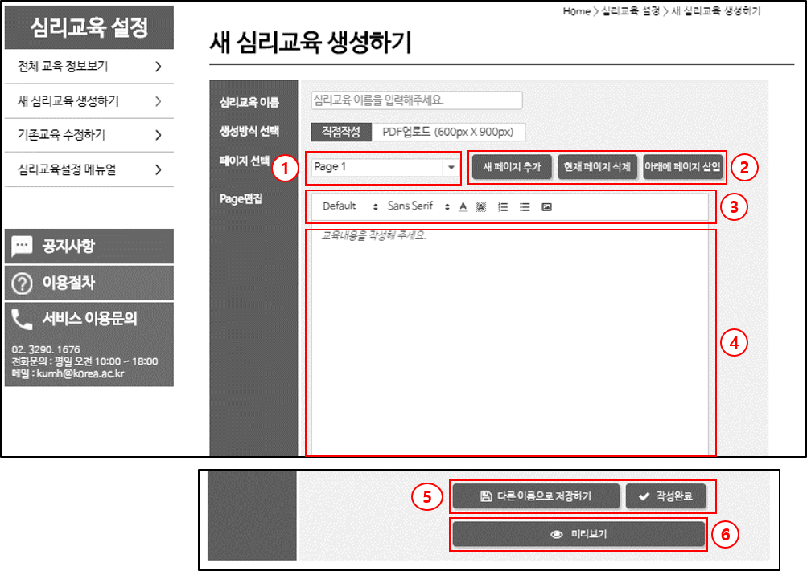
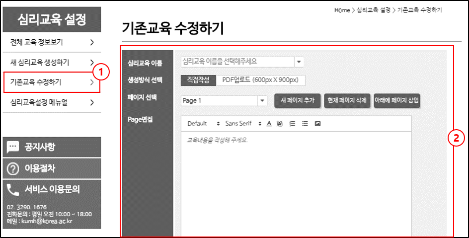
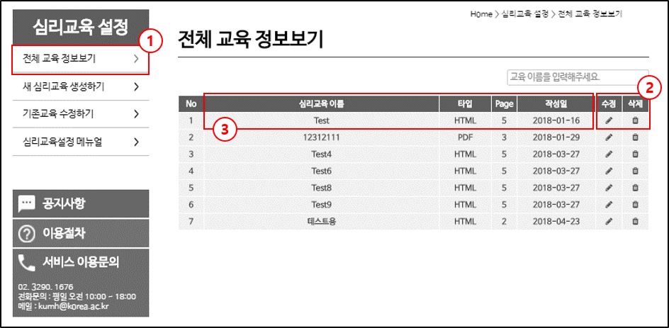

1. 새 심리교육 생성하기
이곳에서 새로운 심리교육을 생성할 수 있습니다.
심리교육은 직접 작성할 수도 있고, 미리 PDF파일로 생성해놓은 심리교육을 사용할 수도 있습니다
저장된 심리교육은 내담자의 핸드폰에서 카드뉴스 형식으로 보여지게 됩니다.

1. [새 심리교육 생성하기] 클릭
2. 생성할 심리교육의 이름 입력
3. 미리 준비된 심리교육 (pdf 파일) 이 있을 경우 [PDF 업로드] 선택 직접 작성할 경우 [직접작성] 선택
1-1. 심리교육 직접 작성
심리교육을 직접 작성할 수 있습니다. 각 페이지별로 텍스트/그림 파일 등으로 심리교육을 작성할 수 있습니다. 저장된 심리교육은 내담자의 핸드폰에서 카드뉴스 형식으로 보여지게 됩니다.

1. 작성/수정할 페이지를 선택합니다.
2. 버튼을 눌러 페이지 추가/삭제
3. 텍스트 폰트 수정 및 그림 삽입
4. 이곳에서 심리교육 내용을 직접 입력합니다.
5. 작성완료 버튼을 눌러 심리교육을 저장합니다. 다른 이름으로 저장하기 버튼을 눌러 이미 저장된 심리교육을 다른 이름으로 저장할 수 있습니다.
6. 미리보기 버튼을 눌러 작성된 심리교육을 확인할 수 있습니다.
2. 기존 교육 수정하기
기존에 작성된 심리교육을 수정할 수 있습니다. 수정하는 방법은 심리교육 생성과 동일합니다.

1. [기존교육 수정하기] 클릭
2. 교육 수정법은 심리교육 생성하기와 동일합니다.
3. 전체 교육 정보보기
기존에 작성된 심리교육의 목록/정보를 확인, 수정/삭제할 수 있습니다.

1. [전체 교육 정보보기] 클릭
2. 수정/삭제 버튼을 눌러 교육을 수정하거나 삭제할 수 있습니다.
3. 작성된 심리교육의 정보가 표시됩니다.